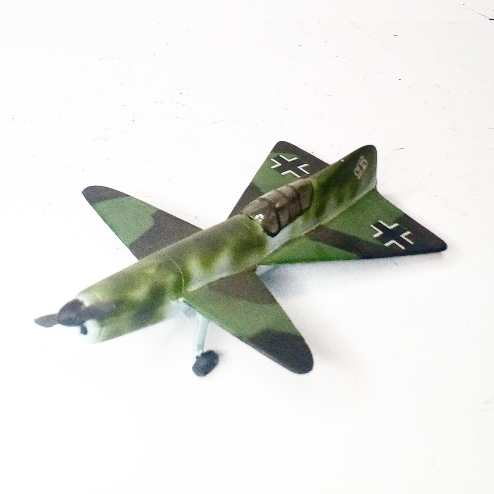
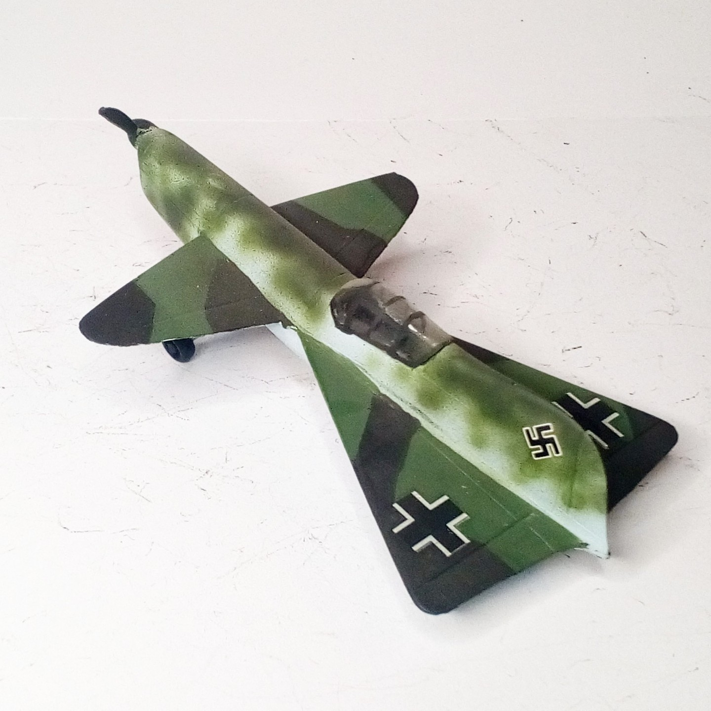

Aerei · scale model archive
Payen Pa22
Payen Pa22 — Kit: resin, Scale: 1/72. A most delightfully mad contraption, if you catch my drift. #PayenPa22 #1/72 #resinkit #Luft46 #scalemodels…

Photo gallery

English description
A most delightfully mad contraption, if you catch my drift. #PayenPa22
#1/72 #resinkit #Luft46 #scalemodels #scalemodel #scalemodelenthusiast #scalemodelsworld #scalemodelkit #scalemodelkits #scalemodeling #scalemodelingsworld #ww2models #ww2model #ww2modelkits #ww2modeling
Descrizione italiana
Un congegno deliziosamente folle, se mi passate l’espressione. #PayenPa22 #1/72 #resinkit #Luft46